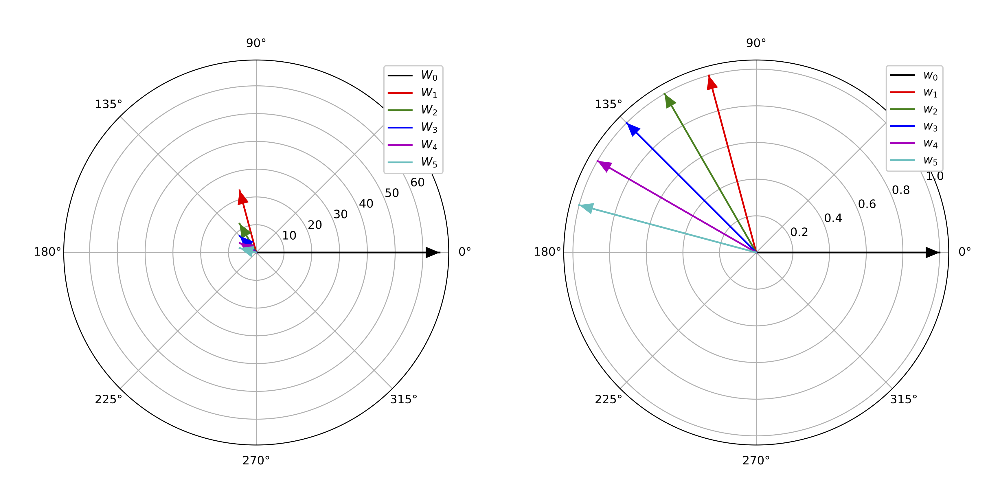
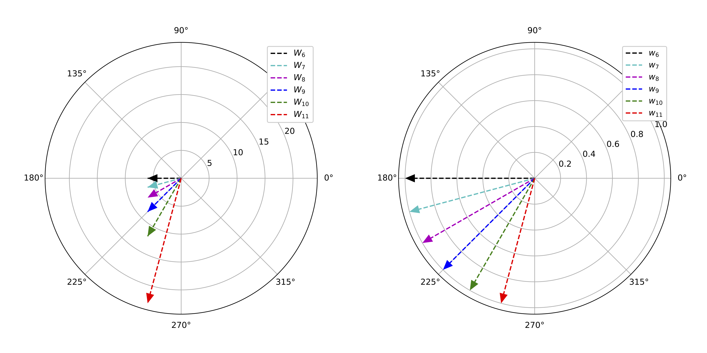
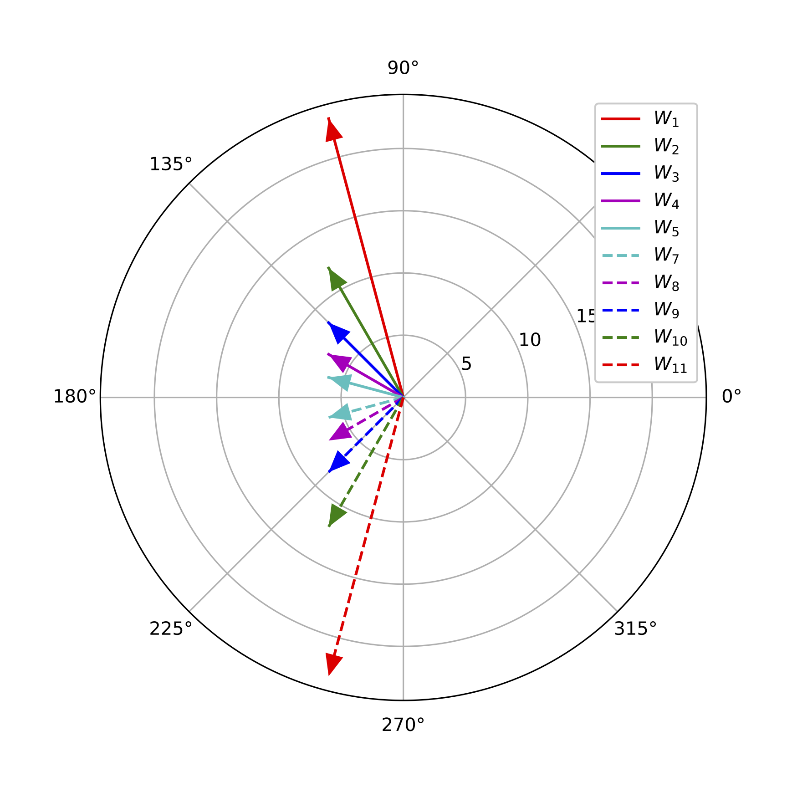
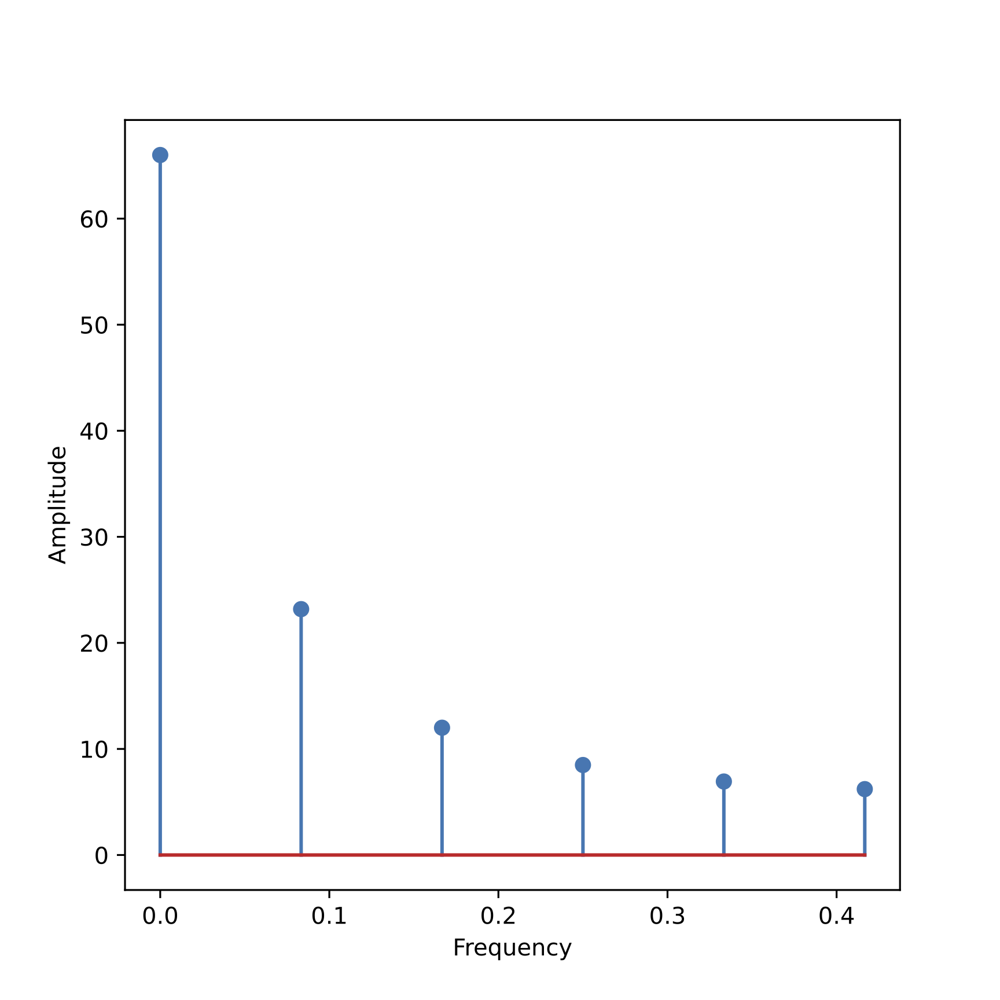
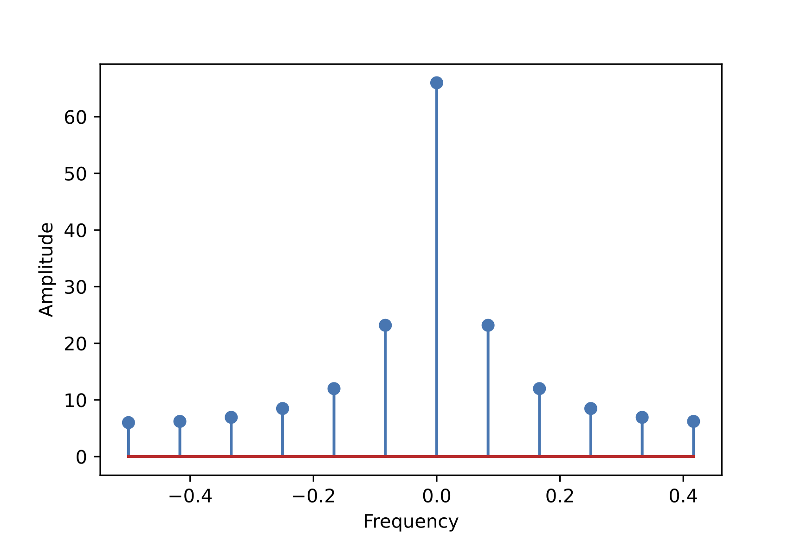

傅里叶分析（Fourier analysis）基础（2）——Python实现
接着上一篇《傅里叶分析（Fourier analysis）基础（1）——理论》，我们选取scipy.fft）来进行傅里叶分析。
使用 scipy.fft 做傅里叶分析
为了统一符号，接下来我们在notebook中都使用小写变量 $x$ 表示时域信号（函数），大写变量 $X$ 表示频域表征。
首先定义一段时域长度为 $N$ 的时域信号（$N=12$）：
>>> import numpy as np
>>> N = 12
>>> x = np.arange(N)
>>> x
array([ 0, 1, 2, 3, 4, 5, 6, 7, 8, 9, 10, 11])
接下来，使用scipy.fft进行离散傅里叶转换：
>>> from scipy.fft import fft
>>> X = fft(x)
>>> X
array([66. -0.j , -6.+22.39230485j, -6.+10.39230485j,
-6. +6.j , -6. +3.46410162j, -6. +1.60769515j,
-6. -0.j , -6. -1.60769515j, -6. -3.46410162j,
-6. -6.j , -6.-10.39230485j, -6.-22.39230485j])
>>> len(X)
12
可见，离散傅里叶变换得到的频域表征 $X$ 与时域信号 $x$ 长度相等，$N=12$。每个频率分量 $X_k$ 都是复数，可表示成 $X_k=a+b\cdot j$ 的形式（$k=0,2\dots 11$）。例如，$X_1=-6+22.39j$。
其中 $\{X_1,X_2,\dots,X_5\}$ 这 5 个频率分量表示正频率，因其所对应的角频率 $\omega_k=2\pi \frac{k}{N}$ 均在 $[0,\pi)$ 之间：
$$ \omega_1=2\pi\frac{1}{12},\ \omega_2=2\pi\frac{2}{12},\ \omega_3=2\pi\frac{3}{12},\ \omega_4=2\pi\frac{4}{12},\ \omega_5=2\pi\frac{5}{12} $$
在极坐标轴上表示如下（左图为原向量，右图为归一化后的向量）：

$\{X_1,\dots,X_{5}\}$ 与后 5 个负频率分量 $\{X_6,\dots,X_{11}\}$ 成共轭（conjugate）关系，即：
$$ X_{k}={\overline {X_{N-k}}}\quad (k=1,2,\dots,N-1) $$
例如，$X_1=-6-22.39j$，$X_{11}=-6+22.39j$，他们的虚部是相反数。所以，$\{X_6,\dots,X_{11}\}$ 画在极坐标中如下。可见，$\{X_6,\dots,X_{11}\}$ 与 $\{X_1,\dots,X_{5}\}$ 的方向沿$x$轴翻转，但是长度相等。之所以左下图中 $w_{11}$（红色虚线）长度比左上图中 $w_{1}$ 看上去更长，是因为黑色水平向量 $w_6$ 的存在（对应 $X_6=-6-0.j$ ）

为了避免 $X_0$ 和 $X_6$ 带来的混淆，我们将去除二者之后的10个角频率画出来，发现的确正频率（$\{X_1,\dots,X_{5}\}$）和负频率（$\{X_7,\dots,X_{11}\}$）是研 $x$ 轴对称的，如下图：

综上所述，我们分析频谱时，只需关注正频率（或负频率）一边即可。 回到上面的例子，5个正频率分量 $X_1$ 到 $X_5$ 分别是：
$$ \begin{aligned} X_1&=-6+22.39j => |X_1| = \sqrt{(-6)^2+(22.39)^2} = 23.18\\ X_2&=-6+10.39j => |X_2| = \sqrt{-6.00^2 + 10.39^2} = 12.00\\ X_3&=-6+6j => |X_3| = \sqrt{-6.00^2 + 6.00^2} = 8.49\\ X_4&=-6+3.46j \Rightarrow |X_4| = \sqrt{-6.00^2 + 3.46^2} = 6.93 \\ X_5&=-6+1.61j \Rightarrow |X_5| = \sqrt{-6.00^2 + 1.61^2} = 6.21 \\ \end{aligned} $$
再加上零频率 $X_0$，我们得到了频谱的幅度谱（amplitude spectrum）：

使用 fftfreq 和 fftshift 绘制频谱
上一张频谱图的绘制代码如下：
from scipy.fft import fftfreq
xf = fftfreq(N)[:6]
plt.stem(xf, np.abs(X[:6]), use_line_collection=False)
fftfreq 的功能是返回傅里叶变换的频点，这里参数 N=12 是我们时域信号的长度，fftfreq(12) 返回的是 $[0,1)$ 区间内的12个频率点：
>>> print(fftfreq(12))
[ 0. 0.08333333 0.16666667 0.25 0.33333333 0.41666667
-0.5 -0.41666667 -0.33333333 -0.25 -0.16666667 -0.08333333]
>>> print(len(fftfreq(12)))
12
前面1-5项是正频率，即 $\omega_1\dots \omega_5$ 的频率系数：$[\frac{1}{12}, \frac{2}{12},\dots,\frac{5}{12}]$. 后面6-11项是负频率（逆序），即 $\omega_{11}\dots \omega_6$ 的系数：$[-\frac{6}{12}, -\frac{5}{6},\dots,-\frac{1}{12}]$。
所以绘图时，可以用 ffreq(N)[:6] 语句来只取前6项作为 x 轴坐标。或者用 fftshift 将负频率移到前面，和正频率排成按 0 点对称的形式：
>>> from scipy.fft import fftshift
>>> xf = fftfreq(12)
>>> xf = fftshift(xf)
>>> print(xf)
[-0.5 -0.41666667 -0.33333333 -0.25 -0.16666667 -0.08333333
0. 0.08333333 0.16666667 0.25 0.33333333 0.41666667]
对频率分量 $X$ 也进行相应的 fftshift操作后，就可以绘制出包含正、负频率的完整频谱（沿 $y$ 轴对称）：
X_plot = fftshift(X)
plt.stem(xf, np.abs(X_plot), use_line_collection=False)
